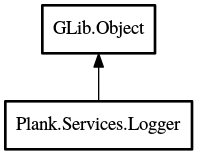

Logger
Object Hierarchy:

Description:
public class Logger : Object
A logging class to display all console messages in a nice colored format.
Content:
Properties:
Static methods:
- public static void initialize (
string app_name)
Initializes the logger for the application.
- public static void notification (
string msg, string icon = "")
Displays a log message using libnotify. Also displays on the console.
- public static void verbose (
string msg, ...)
Displays a verbose log message to the console.
Inherited Members:
All known members inherited from class GLib.Object
- @new
- newv
- new_valist
- get_type
- get_class
- @ref
- unref
- ref_sink
- weak_ref
- weak_unref
- add_weak_pointer
- remove_weak_pointer
- @get
- @set
- get_property
- set_property
- get_data
- set_data
- set_data_full
- steal_data
- get_qdata
- set_qdata
- set_qdata_full
- steal_qdata
- freeze_notify
- thaw_notify
- dispose
- constructed
- notify_property
- connect
- disconnect
- add_toggle_ref
- remove_toggle_ref
- bind_property
- notify
- ref_count